Tab girinti ekler, Shift ile Tab girintiyi kaldırır. Editörden çıkmak için önce Esc, sonra Tab. Çalıştırmak için Command ya da Control ile Enter.
Konsol

Tab girinti ekler, Shift ile Tab girintiyi kaldırır. Editörden çıkmak için önce Esc, sonra Tab. Çalıştırmak için Command ya da Control ile Enter.